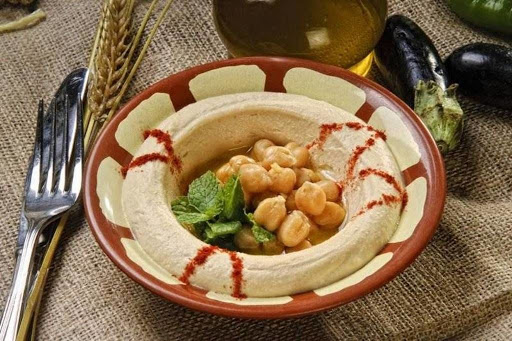

Vorspeise
Hummus

Zutaten: für 3 Personen
- 1 Dose Kichererbsen,ca. 400 - 500 g
- 2 EL Tahin
- 3 Zitrone(n), Saft davon
- 4 Knoblauchzehe(n), durchgepresst
- 1 Bund Petersilie, kein Muss, dient nur zur Deko
- Öl, neutrales, nichts Bitteres
- 2 EL Kreuzkümmelpulver, evtl. mehr
- 1 EL Currypulver
- Salz und Pfeffer, weißer
- evtl. Paprikapulver, rosenscharfes
- Fladenbrot(e), türkisch oder arabisch, knusprig aufgebacken
Zubereitung
-
Die Kichererbsen in einem Sieb abseihen und die Flüssigkeit auffangen.
- Kichererbsen mit Tahin, Knoblauch, etwas Zitronensaft (nicht alles auf einmal besser nachwürzen), Chilischote, Currypulver, etwas Salz und Kreuzkümmelpulver in den Mixer geben. Ein Glas der aufgefangenen Kichererbsenflüssigkeit und 3 - 4 EL Öl dazugeben und mixen.
- Wenn die Konsistenz zu dick ist, peu à peu ein wenig mehr
von der Kichererbsenflüssigkeit dazugeben,
bis eine cremige Konsistenz erreicht ist.
Mit weißem Pfeffer, Salz, Kreuzkümmelpulver
und Zitronensaft abschmecken. Mit Klarsichtfolie
abdecken und mindestens 2 Stunden ruhen lassen, das ist wichtig!
- Auf eine tiefe Platte gießen und mit Petersilie dekorieren.
Wenn man will, kann man vor dem Servieren noch etwas
Rosenpaprika mit Öl vermischen und das darüber träufeln.
Das sieht sehr schön aus, schmeckt sehr gut,
macht das Ganze aber natürlich noch kalorienreicher,
als es ohnehin ist..
- Mit frisch aufgebackenem Fladenbrot genießen!